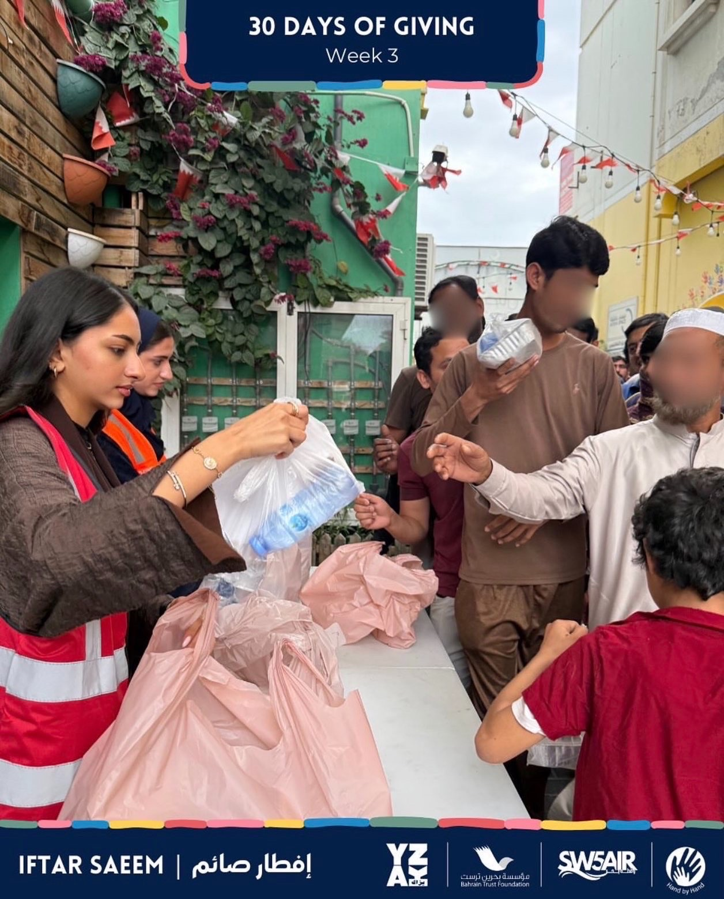
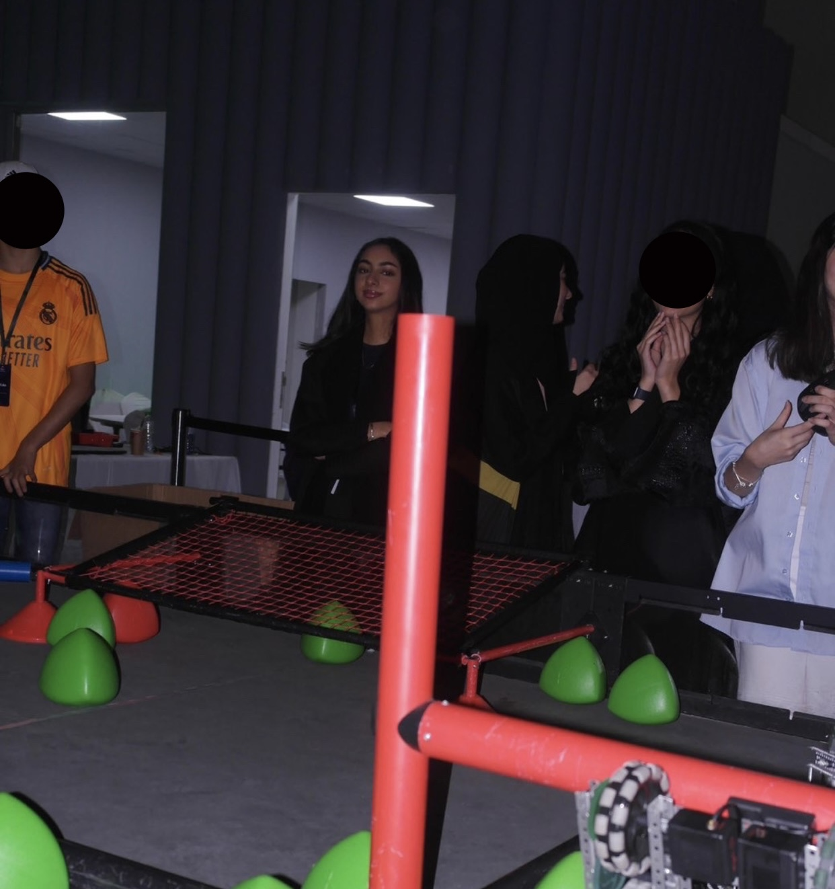

Ramadan Iftar Volunteer – YZAK Bahrain & Bahrain Trust (2025 & 2026)
During Ramadan, I participated in the Iftar Saem initiative organized by YZAK and Bahrain Trust. The program provides meals to people in need across Bahrain, ensuring that those facing financial or social challenges receive nutritious food during the holy month. I helped with preparing and distributing the meals, contributing to the community and supporting this meaningful cause.

Image 1 of 8
VEX Robotics – Youth City Bahrain (2024 & 2025)
In the VEX Robotics program, I worked as part of a team to design, build, and program robots to complete specific challenges. We used mechanical tools, electronics, and coding to make our robots move and perform tasks. The program also included using controllers to operate the robots during competitions. It allowed me to apply problem-solving skills and explore STEM.

Image 1 of 8
Web Fundamentals Project – Wedding Palace Website
For this project, I worked with a teammate to create a website called Wedding Palace. The website focuses on wedding-related items such as bridal dresses, guest outfits, and jewellery. It includes multiple pages with a consistent design, along with features like a registration form and an inquiry section. We used HTML, CSS, and JavaScript to build an interactive and visually appealing website that is easy for users to navigate.
🔗 View the websiteSummary of Courseworks
Iftar Saem Volunteer Work (YZAK Bahrain & Bahrain Trust Foundation)
Through this experience, I learned the importance of teamwork and organization while participating in a community initiative. I developed better communication skills and understood the value of responsibility when working to support people in need.
VEX Robotics Program
In this program, I learned how to build and program a robot to perform specific tasks. I gained experience in coding, problem-solving, and understanding how different components work together. This helped me improve my logical thinking and teamwork skills.
Wedding Palace Website
In this project, I learned how to design and develop a multi-page website using HTML, CSS, and JavaScript. I gained a better understanding of creating user-friendly layouts, organizing web pages, and applying form validation. I also learned the importance of consistency in design and how interactive features improve the user experience.